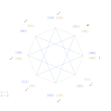

Quantum computers promise new computational paradigms as hardware limitations
decrease. Their relevance is justified rather succintly with the following statement:
an operational quantum computer would immediatley render obsolete some
forms of cryptography currently implemented (namely the application of Shor's Algorithim
to the widely used RSA encryption scheme). The foray into basic quantum algorithms below focuses
on the current paradigm of the qubit, inspired by classical computation, but a case can be made
for a future of quantum computation based on the qudit.
Basic Quantum Algorithims
Many algorithims use more basic algorithims as components. Arguably, the three most
general and basic quantum algorithims are the Quantum Fourier Transform (QFT), the
quantum algorithim for phase estimation of some unitary operatory (Phase Estimation), and
the quantum algorithim for the amplification of some desirable subspace in some
larger superposition (Amplitude Amplification). These three algorithims build off of each
other in the order just given. That is, the QFT is the simplest, while phase estimation
incorporates the QFT, and amplitude amplification generally requires the use of phase
estimation. Phase estimation is the quantum machinery in Shor's algorithim.
Amplitude amplification can be seen as a generalization of Grover's search algorithim.
Quantum Fourier Transform
The quantum Fourier transform is a quantum implementation
of the discrete Fourier transform.
Given some pure quantum state of the computational basis \(\vert j \rangle \) where \(j\) ranges from
\(N=0\) to \(2^n-1\), the \(n\)-qubit QFT acts on \(\vert j \rangle\) as
$$ \vert j \rangle \rightarrow \frac{1}{\sqrt{N}}\sum_{k=0}^{N-1}e^{2\pi i j k/ N}\vert k \rangle . $$
In this way, the QFT effectively takes some computational basis state \( \vert j \rangle \) and
returns a complete superposition of basis states traveling around the unit circle at a
rate \( \omega^j \).

In terms of the binary computational basis, the QFT can be expanded as
And here the binary representation of decimals is used so that \( 0.j_1j_2...j_n=\frac{j_1}
{2}+\frac{j_2}{4}+...+\frac{j_n}{2^n}\) where all \( j_i=0 \) or 1.
The QFT, like any strictly quantum operation, is really a unitary operator.
As an example,
here is the matrix form of the 3-qubit QFT:
And below is the corresponding quantum circuit for the 3-qubit QFT (without swaps):
The QFT is a wonderful little routine, that would expedite many classical
processes' if only we had direct access to the output state vector.
However, one of the great uses of the QFT in quantum speed-ups is it's
close association to phase estimation, a truly useful template for
quantum circuits. For a deeper look at the Quantum Fourier Transform, see notes by
Todd Brun
,
Dave Bacon
,
and
Scott Aaronson or Chapter 5 ("The quantum Fourier transform and it's applications") of
Nielsen and Chuang.
Phase Estimation
The quantum phase estimation algorithim computes the eigenvalue of some
unitary operator given an associated eigenvector. The name phase estimation comes
from the fact that the eigenvalues of a unitary operator are neccessarily of
norm one and thus have the form \( \lambda = e^{\theta i} \), so
finding the phase \( \theta \) is equivalent to calculating the eigenvalue.
For an n-qubit phase estimation setup, any phase \( \theta=k\frac{2\pi}{2^n} \) with k an
integer can be deduced exactly. That is, any phase that can be encoded perfectly on
n bits will be encoded as exactly the quanum state \( \vert k \rangle \). For phases not
of the form \( \frac{\pi k}{2^{n-1}} \), a superposition
of states will be produced. However, this superposition can be considered to be 'centered'
around the real value. Upon a set of measurements, the best n-bit approximation of \( k \) will
be measured with at least a probability ~40%.
The phase estimation algorithim is a relatively efficient way
of calculating the eigenvalues given pairs of unitary operators and
associated eigenvectors. This means, for those searching for applications,
all you have to do is reduce whatever mathematical problem you're trying to
solve into a unitary matrix and an associated eigenvector, and consider how
one could encode the answer in the corresponding eigenvalue.
To see phase estimation in simulated action, see the examples in this section
of the Qiskit textbook. For greater depth, see Section 5.2 ("Phase estimation") of
Nielsen and Chuang, lecture notes by Birgitta Whaley, a set
prepared for the QUIC Seminar, a short practical overview by
Ansh Nagda,
or a presentation by Todd Brun.
Amplitude Amplification
A generalization of Lov K. Grover's Algorithm detailed in
Quantum computers can search rapidly by using almost any transformation
, the amplitude amplification algorithim reflects the statevector about the axis of the 'bad' subspace
once partitioned by an oracle, and then reflects about the axis of the original state vector (which is always
\(\vert +\rangle^{\otimes n}\) in Grover's search algorithm with an
angle made with the 'good' subspace of \(\frac{1}{\sqrt{2^n}}\) ).
Consecutive reflections of this nature nudge
the statevector closer to the 'good' subspace, effectively 'searching' the space
to produce a statevector aligned with the 'good' subspace.

Of course, the number
of reflections requires knowledge about the angle between the initial statevector
and the 'good' subspace. This information can be garnered from the use of the
amplitude estimation algorithim, a special case of phase estimation. The de facto
resource for these algorithims is Giles Brassard and Peter Høyer's
Quantum Amplitude Amplification and Estimation.
Below is an interactive applet showing the first application of the oracle and Grover diffusion operator, known collectively as
a single Grover iteration. We denote the reflection about the
\(\mathcal{B}\) axis \(\mathcal{S_G}=\mathbb{I}-2\vert \psi \rangle \langle \psi \vert\). And we denote the reflection about the
original state-vector \(-S_{\vert \psi \rangle}=\mathbb{I}
-2\vert\psi\rangle\langle\psi\vert\). Note that the oracle is effectively the first reflection \(\mathcal{S_G} \), whereas the operator
\(-\mathcal{S_{\vert \psi\rangle}} \) is the Grover diffusion operator when \(\vert \psi\rangle=\vert +\rangle ^{\otimes n}\) and there's
only one solution.
Drag \( \vert\psi\rangle \) around to experiment with initial states with different proportions of solutions:
Quantum counting, or amplitude estimation, is the algorithm used to find the number of solutions in
the state \(\mathcal{S_G}\vert \psi\rangle\). That is, quantum counting is used to find
the number of basis states inverted by the oracle in amplitude amplification. It really is just phase estimation applied
to repeated Grover iterations, as shown below.

Quantum Coding
Currently, the two most relevant software development kits for working with and simulating quantum circuits are
those supported by organizations developing the hardware. IBM has their Qiskit SDK and their IBM
Quantum Experience. They seem to be the most open to community involvement, both in terms of real access to quantum
hardware (pretty much anyone can run small experiments now) and general resources. Google has their Cirq SDK
which has some nice features (specifically the comparatively easy implementation of qudits) but they're generally
less liberal in giving access to their real devices. For a more comprehensive list of resources see the following
Stack Exchange discussion
or this Wikipedia list.
Qiskit
Qiskit is a python module supported by IBM that allows users to explicitly code quantum
circuit frameworks on which simulations can be run. It also allows users to run
quantum experiments on real quantum computers at IBM, though all the
limitations of modern technology apply (low qubit counts, poor fidelity gates,
and non-negligible noise).
For those first getting into the world of quantum programming with QISkit,
a wonderful free online textbook written as an introduction to both QIS and Qiskit
can be found at Qiskit textbook.
It's written in a mixture of html and jupyter notebook sections,
allowing for a more interactive experience.
Cirq
Cirq is a python module supported by Google that allows users to explicitly code quantum
circuits as well. Unfortunately Google is less liberal in granting access to their real quantum
hardware, but simulations are built in.
One introductory resource for cirq can be found here.
Resources
The classic reference for Quantum Information and Computational Science is the fantastic
textbook, Quantum Computation and Quantum Information, by
Michael A. Nielsen and Isaac L. Chuang. This text is also a reasonably good
introduction to the principles of QIS. However, if taken as a starting point
some familiarity with linear algebra is strongly recommended. It can be purchased
in print, published by Cambridge University Press.
Another introductory text for those getting into quantum computing is Eleanor G. Rieffel and
Wolfgang H. Polak's Quantum Computing: A Gentle Introduction. This text is arguably a better pure
introduction to the field. It can also be found in print, published by MIT Press.